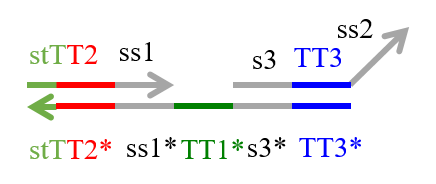
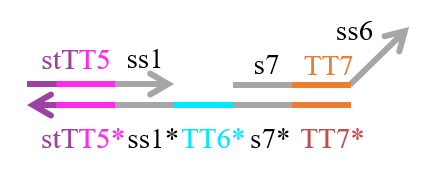
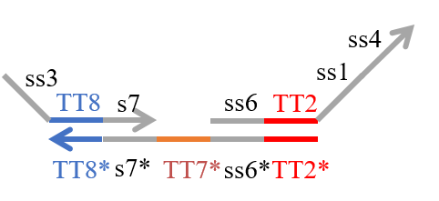
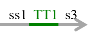
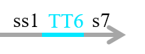

|
 |
DNA Interference Canceller |
Materials & Methods
1.Simulation Condition
We set the rate constant based on toehold length as follows [1,2].

2.Type of strands
We designed the strands shown in Figures 1~6.|  |
 |
 |
 |
In addition to these strands, we prepared the strand shown in Figure 7 to confirm whether the output was released.
Figure 7 : Reporter
Additionally, we designed DNA sequences by visual DSD[3] and NUPACK[4]. The DNA sequences are shown below in Table 1. Visual DSD is a software which simulates and analyzes DNA strand displacement reactions, and can be utilized as a programing language for a computer-aided design of DNA circuits. On the other hand, NUPACK can design the DNA sequences, and evaluate their secondary structures at a room temperature.

The colored portions show the toeholds, with the colors corresponding to those shown in Figures1~7.
In addition, input DNAs and their DNA sequences are shown in Figure 8, Figure 9, and Table 2.
|  |
 |

The colored portion shows the toehold, with colors corresponding to those in Figures 8 and 9.
We then performed experiments using these strands, as described below.
3.Verification experiment
Next, we examined whether Makeoutput and Reporter may react because they have complementary sequences TTT1 and TTT1*. If they did react, the output would not be released as desired (Figure 10). 
Figure 10 : Verification experiment
Therefore we conducted verification experiment with Makeoutput1, Reporter, and Verification inputs (Figure 11).

Figure 11 : Makeoutput1, Reporter, and Verification inputs
Step 1-1 Dilution
We diluted the strands until reaching the desired concentration. The experiment was performed at 20°C in Tris-EDTA buffer supplemented with 12.5 mM MgCl2 (Table 3).

Figure 12 : State of the experimental
Step 1-2 Annealing
We annealed the strands by changing the temperature from 95 to 20°C (-1°C/min) after heating at 95°C for 15 min.
Figure 13 : Thermal Cycler (GeneAtlas 322/325)
Step 1-3 Reporter measurement
We applied Reporter resonance energy transfer (FRET) to confirm how much output was released using a spectrofluoremeter (FP-8300; JASCO), as shown in Figure 14, and measured the Reporter intensity. We used FAM as a Reporter molecule and BHQ1 as quencher. The Reporter was monitored at a wavelength of 521 nm, with excitation at 496 nm.
Figure 14 : Spectrofluorometer(FP-8300,JASCO)
Step 1-3-1
We measured the Reporter intensity for 30 min after adding the Reporter and Makeoutput1 in a cell.
Step 1-3-2
We added the Verification Input at 30 min after Step 1-3-1 and measured the Reporter intensity (Figure 15).

Figure 15 : Step 1-3-1 & Step 1-3-2
4.Wet Experiment of DNA Interference Canceller
Step.2-1 DiluteWe diluted each strand until reaching the desired concentration, as shown in Table 4 below. The experiment was performed at 20°C in Tris-EDTA buffer supplemented with 12.5 mM MgCl2.

We conducted four types of experiments: Pattern1, Input1 and Input2 were “Low”; Pattern2, Input1 was “High” and Input2 was “Low”; Pattern3, Input1 was “Low” and Input2 was “High”; and Pattern4, Input1 and Input2 were “High”. Each initial input concentration is shown in Tables 5~8 below. We set the input concentration to 100 nM when the input was “High” and to 5 nM when the input was “Low”.
Pattern1: Input1 and Input2 were “Low”

Pattern2: Input1 was “High” and Input2 was “Low”

Pattern3: Input1 was “Low” and Input2 was “High”

Pattern4: Input1 and Input2 were “High”

Step 2-2 Annealing
We annealed each DNA in Table 4 from 95 to 20°C (-1°C/min) after heating at 95°C for 15 min.
Step 2-3 Reporter intensity measurements
We measured the Reporter intensity using a spectrofluoremeter (FP-8300; JASCO) for 10 h with 5-min intervals.
4.Output confirmation
We applied FRET to confirm how much output was released. Before the output reacted with Reporter, the FAM did not fluoresce since the Reporter of FAM was absorbed by BHQ1. When output reacted with Reporter, the Reporter of FAM became detectable because the distance between the FAM and BHQ1 molecules increased (Figure 17).
Figure 17 : Output confirmation
Refference
[1] D. Zhan and E. Winfree: Control of DNA Strand Displacement Kinetics using Toehold Exchange,J. Am. Chem. Soc, Vol. 131, pp. 17303-17314, 2009.
[2] S. Kobayashi, K. Yanagibashi, K. Fujimoto, K. Komiya and M. Hagiya:
Analog DNA Computing Devices Toward the Control of Molecular Robots, Workshop on Self-organization in Swarm of Robots: from Molecular Robots to Mobile Agents (WSSR 2014), Nara, Octorber, 2014.
[3]Programming DNA circuit (Visual DSD):
https://www.microsoft.com/en-us/research/project/programming-dna-circuits/
[4]Nupack:
http://www.nupack.org